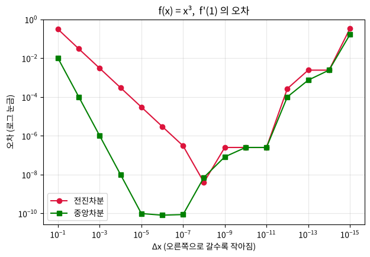

제 2 편
수치미분 - 파이썬으로 미분하기#
근거 자료: 박성호, 「머신러닝/딥러닝을 위한 수치미분 (II)·(III)」 (ML_LEC_10, ML_LEC_11), 「Python function·lambda」 (ML_LEC_04)
학습 목표#
수치미분이 무엇인지 알고, 수학 공식으로 하는 미분(해석적 미분)과 비교할 수 있다.
중앙차분 공식을 파이썬 함수로 구현하여 미분계수를 계산할 수 있다.
변수가 여러 개인 함수의 편미분을 수치미분 코드로 계산하고 그 의미를 설명할 수 있다.
지난 시간 복습 (제 1편)#
미분은 “입력이 아주 조금 변할 때 출력이 얼마나 민감하게 변하는가” 를 알려 준다.
f(x) = x² 이면 f’(x) = 2x, 따라서 f’(3) = 6
편미분: 관심 있는 변수 하나만 움직이고 나머지는 상수로 고정한다.
오늘의 질문 🤔 컴퓨터는 “x² 을 미분하면 2x” 라는 공식을 모릅니다. 그렇다면 컴퓨터는 어떻게 미분을 할까요?
핵심 정리#
① 컴퓨터의 미분 = 작은 h 로 계산한 기울기
전진차분 : f′(x) ≒ {f(x + h) − f(x)} / h
중앙차분 : f′(x) ≒ {f(x + h) − f(x − h)} / (2h)
② 왜 중앙차분이 더 정확한가 (테일러 전개)
f(x + h) = f(x) + f′(x)h + f″(x)h²/2 + f‴(x)h³/6 + …
f(x − h) = f(x) − f′(x)h + f″(x)h²/2 − f‴(x)h³/6 + …
전진차분 : {f(x + h) − f(x)} / h = f′(x) + f″(x)h/2 + … → 오차가 h 에 비례
중앙차분 : {f(x + h) − f(x − h)} / (2h) = f′(x) + f‴(x)h²/6 + … → h² 항이 서로 지워져 오차가 h² 에 비례
예) f(x) = x³, x = 1, h = 0.1 : 전진차분 3.31 (오차 0.31), 중앙차분 3.01 (오차 0.01)
f(x) = x² 이면 f‴(x) = 0 이므로 중앙차분의 오차는 h 와 상관없이 0 이다. (아래 애니메이션 1)
③ h 는 무조건 작을수록 좋을까?
컴퓨터는 수를 약 16 자리까지만 저장한다. h 가 너무 작으면 f(x + h) 와 f(x − h) 가 거의 같아져 뺄셈에서 반올림 오차가 커진다. 그래서 보통 h = 10−4 을 쓴다.
④ 변수가 여러 개이면
변수마다 그 변수만 ±h 만큼 움직여 편미분을 하나씩 구한다.
f(x, y) = 2x + 3xy + y³ 의 점 (1, 2) 에서 (∂f/∂x, ∂f/∂y) = (2 + 3 × 2, 3 × 1 + 3 × 2²) = (8, 15)
코드로 직접 해 보려면 : 페이지 위쪽 로켓 버튼 → Colab 을 누르세요. 값을 바꿔 가며 실행하고, 연습 문제의 정답도 코랩에서 확인합니다. 처음 열면 파일 → Drive에 사본 저장 부터 하세요.
개념 다지기 1. 수치미분(Numerical Derivative)이란?#
구분 |
해석적 미분 (수학 시간) |
수치미분 (컴퓨터) |
|---|---|---|
방법 |
미분 공식을 이용해 도함수 식을 구한다 |
아주 작은 Δx 를 직접 넣어 값을 계산한다 |
예 |
f(x) = x² → f’(x) = 2x → f’(3) = 6 |
{f(3 + 0.0001) − f(3 − 0.0001)} / 0.0002 = 6.000000000012… |
장점 |
정확하다 |
공식을 몰라도 어떤 함수든 계산할 수 있다 |
미분계수의 정의와 중앙차분#
정의: f’(x) = limΔx→0 {f(x + Δx) − f(x)} / Δx
컴퓨터는 Δx → 0 (극한)을 할 수 없으므로 Δx 에 아주 작은 수 (예: 10−4 = 0.0001) 를 넣어 계산합니다.
이때 x 의 양쪽을 똑같이 Δx 만큼 잡는 중앙차분을 쓰면 훨씬 정확합니다.
중앙차분 공식 f’(x) ≒ {f(x + Δx) − f(x − Δx)} / ( )
[생각해 보기] 💡 두 점 (x − Δx, f(x − Δx)), (x + Δx, f(x + Δx)) 을 잇는 직선의 기울기를 구해 보면, 분모는 두 점의 x 좌표의 차인 (x + Δx) − (x − Δx) = ( ) 이 됩니다.
개념 다지기 2. 파이썬으로 함수 만들기 : def 와 lambda#
수학의 함수 f(x) = x² 을 파이썬에서는 두 가지 방법으로 만들 수 있습니다.
# 방법 1: def
def f(x):
return x**2
# 방법 2: lambda (한 줄 함수)
f = lambda x : x**2
lambda 입력 : 식은 “f(x) 를 식으로 바꿔 계산하라” 는 뜻입니다.수치미분 함수에 미분할 함수 자체를 입력으로 넘겨줄 때 아주 편리합니다.
f(3) = ( ), g(2) = ( ), h(1, 2) = ( )
실습 1. 수치미분 1차 버전 (변수가 1개인 함수)#
중앙차분 공식을 그대로 코드로 옮깁니다.
수학 |
코드 |
|---|---|
미분할 함수 f |
|
미분계수를 구할 점 x |
|
아주 작은 수 Δx |
|
{f(x + Δx) − f(x − Δx)} / (2Δx) |
|
[확인 1] 수치미분 결과는 6 과 정확히 같나요? 차이가 난다면 그 이유는 무엇일까요? ( )
[예제 2] f(x) = 3x·ex 에서 f’(2) 구하기#
수학 공식 (곱의 미분): f’(x) = 3ex + 3x·ex
따라서 f’(2) = 3e² + 3 × 2 × e² = ( ) e² ≒ ( )
애니메이션 1. Δx 가 작아지면 할선이 접선이 된다#
f(x) = x² 위의 점 x = 1 에서
🔴 전진차분: 두 점 1 과 1 + Δx 를 잇는 직선
🟢 중앙차분: 두 점 1 − Δx 와 1 + Δx 를 잇는 직선
Δx 가 1.5 에서 0 에 가까워질 때 두 직선의 기울기가 어떻게 변하는지 관찰하세요.
[관찰 1] ① Δx 가 작아질수록 빨간 직선의 기울기는 ( ) 에 가까워진다. ② 초록 직선(중앙차분)의 기울기는 Δx 의 크기와 상관없이 항상 ( ) 이다. 왜 그럴까요? (힌트: {(1 + Δx)² − (1 − Δx)²} / (2Δx) 을 직접 전개해 보세요.) ( )
탐구. Δx 는 무조건 작을수록 좋을까?#
f(x) = x³ 에서 f’(1) = 3 입니다. Δx 를 10−1, 10−2, … , 10−15 으로 바꿔 가며 오차 = |수치미분 − 3| 을 비교해 봅시다.
Δx | 전진차분 오차 | 중앙차분 오차
--------------------------------------------
1e-01 | 3.10e-01 | 1.00e-02
1e-02 | 3.01e-02 | 1.00e-04
1e-03 | 3.00e-03 | 1.00e-06
1e-04 | 3.00e-04 | 1.00e-08
1e-05 | 3.00e-05 | 9.74e-11
1e-06 | 3.00e-06 | 8.03e-11
1e-07 | 3.02e-07 | 8.63e-11
1e-08 | 3.97e-09 | 7.13e-09
1e-09 | 2.48e-07 | 8.17e-08
1e-10 | 2.48e-07 | 2.48e-07
1e-11 | 2.48e-07 | 2.48e-07
1e-12 | 2.67e-04 | 1.00e-04
1e-13 | 2.40e-03 | 7.32e-04
1e-14 | 2.40e-03 | 2.40e-03
1e-15 | 3.31e-01 | 1.64e-01

[탐구 결과] ① 오차가 가장 작아지는 Δx 는 대략 전진차분 ( ), 중앙차분 ( ) 근처이다. ② Δx 가 너무 작아지면(10−12 이하) 오차가 오히려 ( 커진다 / 작아진다 ).
💡 이유: 컴퓨터는 소수를 약 16자리까지만 저장합니다. Δx 가 너무 작으면 f(x + Δx) 와 f(x − Δx) 가 거의 같은 수가 되어, 그 차를 계산할 때 반올림 오차가 크게 드러납니다. 그래서 머신러닝에서는 보통 Δx = 10−4 정도를 사용합니다.
개념 다지기 3. 변수가 여러 개이면? → 변수마다 따로 수치미분#
f(x, y) = 2x + 3xy + y³ 에서 점 (1, 2) 에서의 편미분을 구해 봅시다.
① x 에 대한 편미분 (y = 2 로 고정) f(x, 2) = 2x + 6x + 8 = 8x + 8 → ∂f/∂x = ( )
② y 에 대한 편미분 (x = 1 로 고정) f(1, y) = 2 + 3y + y³ → ∂f/∂y = 3 + 3y², y = 2 를 대입하면 ( )
[의미 해석] 💡
∂f/∂x = 8 : y 를 2 로 고정한 채 x 를 1 에서 아주 조금 늘리면, f 는 그 변화량의 ( )배만큼 변한다.
∂f/∂y = 15 : x 를 1 로 고정한 채 y 를 2 에서 아주 조금 늘리면, f 는 그 변화량의 ( )배만큼 변한다. → 이 점에서 f 는 ( x / y ) 의 변화에 더 민감하다.
컴퓨터도 똑같이 합니다. 변수를 하나씩 번갈아 가며 “그 변수만 ±Δx 만큼 움직이고 나머지는 그대로” 두고 계산합니다.
애니메이션 2. 컴퓨터가 편미분하는 순서 보기#
왼쪽: f(x, y) = 2x + 3xy + y³ 의 등고선 위의 점 (1, 2)
오른쪽: 지금 움직이는 변수 방향으로 자른 단면 곡선과 접선
1단계에서는 x 만 움직이고(y 고정), 2단계에서는 y 만 움직입니다(x 고정).
1단계의 단면 f(x, 2) = 8x + 8 은 직선이라 접선과 완전히 겹칩니다. 2단계의 단면은 곡선이라 접선이 한 점에서만 닿습니다.
실습 2. 수치미분 최종 버전 (변수가 여러 개인 함수)#
변수가 여러 개이면 입력을 numpy 배열 하나에 모아서 넘겨줍니다. 예: (x, y) = (1, 2) → np.array([1.0, 2.0])
코드의 핵심 아이디어 ①~④
번호 |
하는 일 |
|---|---|
① |
계산한 편미분 값을 저장할 빈 배열 |
② |
|
③ |
가리킨 변수 하나만 +Δx, −Δx 로 바꿔서 f 를 계산한다 (나머지 변수는 그대로 = 상수 취급) |
④ |
바꿨던 변수를 원래 값으로 되돌린다 (numpy 배열은 함수 안에서 바꾸면 원본도 바뀌기 때문) |
아래 코드는 계산 과정을 보여 주는 debug 출력이 들어간 버전입니다.
[예제 3] 1변수 함수 f(x) = x², f’(3)#
입력이 하나여도 배열 np.array([3.0]) 로 넘겨야 합니다.
[예제 4] 2변수 함수 f(x, y) = 2x + 3xy + y³, 점 (1.0, 2.0)#
⚠️ 입력은 반드시 실수(1.0, 2.0) 로 넣으세요. 정수(1, 2)로 넣으면 0.0001 을 더해도 정수로 잘려 계산이 틀어집니다.
[확인 2] 개념 다지기 3 에서 손으로 구한 값 ( , ) 과 일치하나요? ( 예 / 아니오 )
[예제 5] 4변수 함수 f(w, x, y, z) = wx + xyz + 3w + zy², 점 (w, x, y, z) = (1, 2, 3, 4)#
변수 4개를 2 × 2 행렬로 묶어서 넘겨줍니다. → [[w, x], [y, z]] = [[1, 2], [3, 4]]
손으로 먼저 구해 봅시다.
∂f/∂w = x + 3 = ( )
∂f/∂x = w + yz = ( )
∂f/∂y = xz + 2zy = ( )
∂f/∂z = xy + y² = ( )
[생각해 보기] 💡 결과도 입력과 똑같이 2 × 2 행렬 모양으로 나옵니다. 나중에 딥러닝에서 수백 개의 가중치를 행렬 W 에 담아 한꺼번에 미분할 때 바로 이 코드를 사용합니다!
연습 문제#
[문제 1] f(x) = ln x + 1/x 일 때, f’(2) 를 손으로 구하고 수치미분으로 확인하세요. 손 계산: f’(x) = ( ), f’(2) = ( )
[문제 2] f(x, y) = x²y + ey 일 때, 점 (1, 0) 에서 ∂f/∂x, ∂f/∂y 를 손으로 구하고 수치미분으로 확인하세요. 손 계산: ∂f/∂x = ( ), ∂f/∂y = ( )
정리#
핵심 |
내용 |
|---|---|
수치미분 |
공식 없이 작은 Δx 를 직접 넣어 미분계수를 계산하는 방법 |
중앙차분 |
f’(x) ≒ {f(x + Δx) − f(x − Δx)} / (2Δx), Δx = 10−4 |
다변수 |
변수를 하나씩 번갈아 움직이며 계산 (나머지는 고정 = 편미분) |
주의 |
Δx 가 너무 작으면 반올림 오차, 입력은 실수형 numpy 배열 |
도전 과제#
f(W) = (W − 3)² 에서 W = 0 일 때 수치미분 값은 ( ) 입니다. 이 값이 음수라는 것은 W 를 ( 늘려야 / 줄여야 ) f(W) 가 작아진다는 뜻입니다. → 다음 시간에는 이 아이디어로 인공지능이 오차를 줄여 가는 방법(경사하강법) 을 배웁니다!
( )